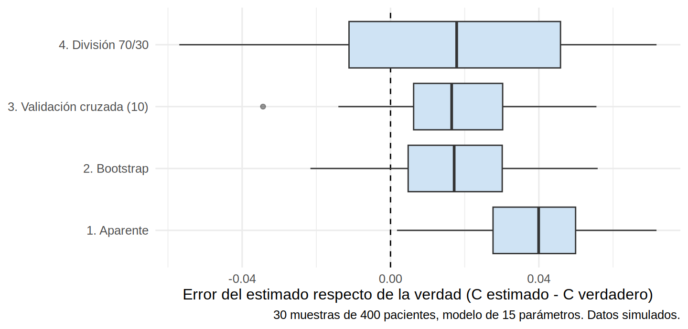
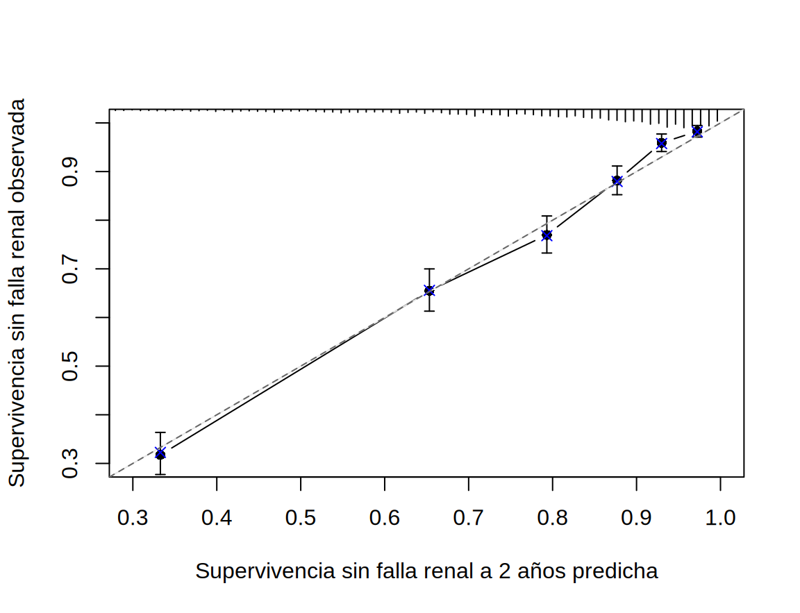

library(tidyverse)
library(survival)
library(rms)
source("R/funciones_extra_c17.R")
theme_set(theme_minimal(base_size = 12))
f2 <- \(x) sprintf("%.2f", x) # dos decimales para el texto
f3 <- \(x) sprintf("%.3f", x) # tres decimales
dev <- read_csv("Bases/cohorte_pronostico.csv", show_col_types = FALSE) |> preparar_pronostico()
oraculo <- oraculo_pronostico(30000, "desarrollo", semilla = 99) # la verdad: 30 000 pacientes sin censuraValidación interna: cuánto optimismo hay en mi modelo
Nota🩺 Escenario
Terminaste tu modelo con 400 pacientes de tu hospital y el índice C sale 0.84. Un revisor pregunta: “¿y cuánto valdrá en pacientes nuevos?”. No tienes otra cohorte. Dividir los 400 en entrenamiento y prueba te deja con 280 y 120 pacientes: el modelo sale peor y la prueba, ruidosa. ¿Hay forma de usar todos los datos para construir el modelo y, a la vez, estimar con honestidad su rendimiento?
El rendimiento medido en los mismos pacientes con que se construyó el modelo (el aparente) es siempre optimista: el modelo ya “vio” esos datos y aprendió también su ruido. La diferencia entre el rendimiento aparente y el que tendría en pacientes nuevos se llama optimismo. La validación interna estima ese optimismo usando solo los datos de desarrollo, para restarlo.
Lo que vamos a hacer
- Estimar el optimismo con el bootstrap (primero a mano y luego con
rms::validate) y dibujar la calibración corregida conrms::calibrate. - Compararlo con la validación cruzada y con la división en entrenamiento y prueba, usando la verdad del oráculo.
- Ver la fuga de información (data leakage), la forma más sutil de engañarse a uno mismo.
Paso 1: el modelo “hambriento” de una cohorte pequeña
Para que el optimismo se vea, creamos el escenario del hospital pequeño: una muestra de 400 pacientes de nuestra cohorte y un modelo con 15 parámetros: las 9 variables clínicas y 6 variables de ruido, que no tienen nada que ver con el desenlace (17.1: pocos eventos por parámetro).
ruido <- paste0("ruido", 1:6)
set.seed(2026)
chica <- dev[sample(nrow(dev), 400), ]
for (v in ruido) chica[[v]] <- rnorm(nrow(chica)) # variables de ruido
set.seed(8)
for (v in ruido) oraculo[[v]] <- rnorm(nrow(oraculo)) # y lo mismo en el oráculo
fml <- Surv(tiempo_meses, krt) ~ edad + sexo + tfg + lu + albumina + fosforo + bicarbonato + dm + ecv +
ruido1 + ruido2 + ruido3 + ruido4 + ruido5 + ruido6
m_chica <- coxph(fml, data = chica)
c_aparente <- m_chica$concordance[["concordance"]]
c_verdad <- c_harrell(predict(m_chica, newdata = oraculo), oraculo$tiempo_meses, oraculo$krt)[["C"]]
c(eventos = sum(chica$krt), parametros = length(coef(m_chica)), C_aparente = c_aparente, C_verdad = c_verdad) |> round(3) eventos parametros C_aparente C_verdad
110.000 15.000 0.843 0.766 Qué vemos. Con solo 110 eventos para 15 parámetros, el modelo parece tener un C de 0.84 en los datos con que se hizo, pero su rendimiento verdadero en pacientes nuevos (el oráculo) es 0.77. Esos 7.8 centésimos son optimismo (más la suerte del muestreo). En la vida real no tendrías el oráculo: el bootstrap intenta adivinar esa diferencia.
Paso 2: el bootstrap de Harrell, a mano
El bootstrap simula “nuevos estudios” remuestreando con reemplazo los propios datos. La idea, en cuatro pasos (Harrell, Regression Modeling Strategies):
- Saca una muestra bootstrap (con reemplazo, del mismo tamaño) y repite en ella todo el proceso de modelado.
- Mide el rendimiento del modelo en esa misma muestra bootstrap (aparente del bootstrap).
- Mide su rendimiento en la muestra original (que hace de “datos nuevos”).
- La diferencia (2) − (3) es una estimación del optimismo. Repite 200 veces, promedia y réstale ese promedio al C aparente original.
set.seed(1)
B <- 200
optimismo <- map_dfr(seq_len(B), \(b) {
i <- sample(nrow(chica), replace = TRUE) # 1. muestra bootstrap
mb <- coxph(fml, data = chica[i, ]) # se ajusta de nuevo todo el modelo
tibble(
aparente_boot = mb$concordance[["concordance"]], # 2. rendimiento en la muestra bootstrap
en_original = c_harrell(predict(mb, newdata = chica), chica$tiempo_meses, chica$krt)[["C"]] # 3. en la original
)
})
optimismo_medio <- mean(optimismo$aparente_boot - optimismo$en_original) # 4. optimismo promedio
c(C_aparente = c_aparente, optimismo = optimismo_medio, C_corregido = c_aparente - optimismo_medio, C_verdad = c_verdad) |> round(3) C_aparente optimismo C_corregido C_verdad
0.843 0.019 0.824 0.766 Qué vemos. El bootstrap estima un optimismo de 0.02 y corrige el C a 0.82: se acerca a la verdad (0.77) pero no la alcanza. Es normal: el bootstrap estima el optimismo esperado de un modelo como este, no el de esta muestra en particular (que tuvo su propia suerte). Para saber si el método funciona en general hay que repetir el experimento muchas veces; lo hacemos en el paso 4.
Paso 3: lo mismo con rms::validate
El paquete rms hace todo esto en una línea y para varios índices a la vez (rms::validate()). Hay que ajustar el modelo con cph(..., x = TRUE, y = TRUE) para que guarde los datos.
index.orig training test optimism index.corrected n
Dxy 0.6869 0.7066 0.6687 0.0379 0.6489 200
R2 0.4015 0.4244 0.3770 0.0473 0.3541 200
Slope 1.0000 1.0000 0.8745 0.1255 0.8745 200
D 0.1547 0.1675 0.1428 0.0247 0.1301 200
U -0.0016 -0.0016 0.0039 -0.0056 0.0040 200
Q 0.1563 0.1691 0.1389 0.0302 0.1261 200
g 1.8834 2.0214 1.7616 0.2598 1.6236 200Cómo leer la tabla (cada fila es un índice):
-
index.orig: el valor aparente;training: el valor en las muestras bootstrap;test: el valor de esos modelos en la muestra original. -
optimism=training−test;index.corrected=index.orig−optimism: el valor corregido. -
Dxyes el índice de Somers; se convierte en C con C = (Dxy + 1) / 2. Aquí: aparente 0.84, corregido 0.82. -
Slopees la pendiente de calibración (siempre vale 1 en los datos de desarrollo). Corregida baja a 0.87: las predicciones son demasiado extremas, justo el sobreajuste de 17.1. El valor es también un factor de encogimiento: multiplicar los coeficientes por ~0.87 los dejaría mejor calibrados (shrinkage). -
R2es el \(R^2\) (Cox-Snell ajustado) yD,U,Q,gson otras medidas de discriminación (poco usadas).
Paso 4: ¿cuál método se acerca más a la verdad? Un experimento
Comparemos ahora, repitiendo el experimento 30 veces (30 muestras distintas de 400 pacientes, cada una con su modelo de 15 parámetros), cuatro formas de estimar el C:
- Aparente: medir en los mismos datos.
-
Bootstrap con corrección de optimismo (
validate(), 100 remuestras). - Validación cruzada de 10 pliegues: se parte la muestra en 10; el modelo se entrena con 9 y se evalúa en el que falta; se repite 10 veces.
- Una sola división 70/30: entrenar con el 70 % y evaluar en el 30 % (la práctica ingenua).
En cada repetición conocemos la verdad (el C del modelo en el oráculo).
set.seed(11)
comparacion <- comparar_validaciones(dev, oraculo, n = 400, R = 30, semilla = 11)
# Error de cada método = estimado - verdad. (Para la división, la verdad es la del modelo entrenado con el 70 %.)
errores <- comparacion |>
transmute(`1. Aparente` = aparente - verdad, `2. Bootstrap` = bootstrap - verdad,
`3. Validación cruzada (10)` = cv10 - verdad, `4. División 70/30` = division - verdad_division)
resumen_errores <- tibble(
metodo = names(errores),
sesgo = colMeans(errores), # promedio del error: ¿se pasa o se queda corto?
variabilidad = apply(errores, 2, sd), # cuánto varía de una muestra a otra
error_total = sqrt(colMeans(errores^2)) # raíz del error cuadrático medio
)
resumen_errores |> mutate(across(where(is.numeric), \(x) round(x, 3)))# A tibble: 4 × 4
metodo sesgo variabilidad error_total
<chr> <dbl> <dbl> <dbl>
1 1. Aparente 0.04 0.018 0.044
2 2. Bootstrap 0.018 0.02 0.027
3 3. Validación cruzada (10) 0.016 0.02 0.025
4 4. División 70/30 0.015 0.038 0.04 errores |>
pivot_longer(everything(), names_to = "metodo", values_to = "error") |>
ggplot(aes(error, metodo)) +
geom_vline(xintercept = 0, linetype = "dashed") +
geom_boxplot(fill = "#CFE3F4", outlier.alpha = 0.5) +
labs(x = "Error del estimado respecto de la verdad (C estimado - C verdadero)", y = NULL,
caption = "30 muestras de 400 pacientes, modelo de 15 parámetros. Datos simulados.")
Qué vemos.
- El aparente se pasa de optimista por 0.040 en promedio (error positivo = sobreestima).
- El bootstrap y la validación cruzada reducen el sesgo a 0.018 y 0.016: corrigen la mayor parte del optimismo, aunque no todo (con tan pocos eventos por parámetro, la corrección es difícil).
- La división 70/30 tiene poco sesgo respecto de su verdad, pero una variabilidad de 0.038, el doble que las otras: una división afortunada o desafortunada cambia mucho el resultado. Además, esa verdad corresponde a un modelo entrenado con solo 280 pacientes, que es peor que el modelo con 400 que realmente usarías (C verdadero promedio de 0.769 frente a 0.775): dividir te cuesta datos y precisión.
- Por eso las guías recomiendan no dividir al desarrollar el modelo, sino usar todo y remuestrear (Collins y cols., BMJ 2024; lectura del autor). Con datos enormes la división puede ser aceptable; con los de un hospital, no.
Paso 5: ¿y con la cohorte completa de 3 000?
Ahora el modelo de 8 parámetros de 17.2, con 839 eventos. El optimismo debería ser mínimo:
mm <- ajustar_modelos_pronostico(dev)
units(dev$tiempo_meses) <- "Month"
dd <- datadist(dev); options(datadist = "dd")
f_completa <- cph(Surv(tiempo_meses, krt) ~ edad + sexo + tfg + lu + albumina + fosforo + bicarbonato + dm,
data = dev, x = TRUE, y = TRUE, surv = TRUE, time.inc = 24)
set.seed(1)
v_completa <- validate(f_completa, B = 200)
v_completa[c("Dxy", "R2", "Slope"), ] index.orig training test optimism index.corrected n
Dxy 0.5984557 0.6014845 0.5969173 0.004567205 0.5938885 200
R2 0.2903863 0.2932043 0.2886210 0.004583333 0.2858030 200
Slope 1.0000000 1.0000000 0.9876397 0.012360283 0.9876397 200Qué vemos. El optimismo del Dxy es de solo 0.005, es decir, el C pasa de 0.799 a 0.797, y la pendiente corregida es 0.99: casi 1. Con 105 eventos por parámetro, el sobreajuste no es el problema. Aun así, reporta el valor corregido, no el aparente.
La calibración también se corrige con bootstrap: calibrate() compara el riesgo predicho con el observado (Kaplan-Meier) por grupos y lo vuelve a calcular en 200 remuestras para dar la curva corregida por optimismo.
Using Cox survival estimates at 24 Months
La curva queda sobre la diagonal: el modelo está bien calibrado a 2 años una vez corregido el optimismo.
Advertencia⚠️
rms::calibrate mide la calibración “sin muerte”
calibrate() compara con 1 − Kaplan-Meier, que trata a los pacientes que mueren antes de la diálisis como censurados. Por eso valida el modelo de causa específica (el riesgo “si nadie muriera”) y no el riesgo absoluto real (que sí cuenta la muerte, 17.2). Para el riesgo con riesgos competitivos usa la calibración con incidencia acumulada de 17.3. Lo mismo vale para validate(): el C que reporta es el del modelo de Cox de la falla renal.
Paso 6: la fuga de información, el error que ningún validate() te salva
La fuga de información (data leakage) ocurre cuando algo de los datos de prueba se usa, sin querer, al construir el modelo. Las validaciones se vuelven optimistas aunque se haga todo “bien”. Las formas más comunes:
- Preprocesar antes de dividir: seleccionar variables, imputar, normalizar o elegir puntos de corte con todos los datos y luego validar.
- Mismo paciente en entrenamiento y prueba (varias visitas por paciente en la misma base).
- Un predictor que “sabe” el desenlace: una variable medida después del evento, o parte de la definición del desenlace.
Lo vemos con el ejemplo clásico (descrito en el libro de Hastie, Tibshirani y Friedman, The Elements of Statistical Learning): 100 pacientes, 1 000 variables de puro ruido y un desenlace aleatorio (que no depende de nada). Ningún modelo debería lograr un AUC mejor que 0.5. Probamos dos formas de validar con 5 pliegues: elegir las 10 variables más asociadas con el desenlace con todos los datos (trampa) o dentro de cada pliegue, solo con el entrenamiento (correcta).
library(pROC)
set.seed(2024)
n <- 100; p <- 1000
X <- matrix(rnorm(n * p), n, p)
y <- rbinom(n, 1, 0.5) # el desenlace no depende de ninguna variable
mejores <- \(X, y, k = 10) order(abs(cor(X, y)), decreasing = TRUE)[1:k] # las k más asociadas con y
auc_cv <- function(X, y, honesto, K = 5) {
pliegue <- sample(rep(1:K, length.out = nrow(X)))
pred <- numeric(nrow(X))
vars_trampa <- mejores(X, y) # TRAMPA: elegidas con TODOS los datos
for (f in 1:K) {
entrena <- pliegue != f
vars <- if (honesto) mejores(X[entrena, ], y[entrena]) else vars_trampa # CORRECTO: solo con el entrenamiento
m <- suppressWarnings(glm(y ~ ., binomial, data.frame(y = y[entrena], X[entrena, vars])))
pred[!entrena] <- predict(m, data.frame(X[!entrena, vars]), type = "response")
}
as.numeric(auc(y, pred, quiet = TRUE))
}
set.seed(1)
auc_fuga <- c(trampa = auc_cv(X, y, honesto = FALSE), correcto = auc_cv(X, y, honesto = TRUE))
round(auc_fuga, 2) trampa correcto
0.88 0.53 Qué vemos. Con la selección hecha fuera del ciclo de validación, el modelo parece tener un AUC de 0.88 sobre un desenlace puramente aleatorio. Haciendo la selección dentro de cada pliegue, el AUC cae a 0.53, que es lo que corresponde (alrededor de 0.5, el azar). La regla: cualquier paso que use el desenlace (selección de variables, ajuste de hiperparámetros, elección de puntos de corte) debe repetirse dentro de cada pliegue o remuestra. Por eso en rms::validate() la opción bw = TRUE repite también la selección por pasos dentro del bootstrap; y por eso preprocesar antes de dividir es un error.
Tip💡 Con el paquete {riskRegression}: validación por remuestreo con riesgos competitivos
Score() puede estimar AUC y Brier con riesgos competitivos y validación por bootstrap (split.method = "bootcv": ajusta el modelo en cada remuestra y lo evalúa en los pacientes que no entraron en ella). Sirve para el modelo de falla renal con la muerte como competidora (CSC(), 17.2).
library(riskRegression)
csc <- CSC(list(Hist(tiempo_meses, estado) ~ edad + sexo + tfg + lu + albumina + fosforo + bicarbonato + dm,
Hist(tiempo_meses, estado) ~ edad + sexo + tfg + dm + ecv + albumina), data = as.data.frame(dev))
set.seed(5)
sc_boot <- Score(list(CSC = csc), formula = Hist(tiempo_meses, estado) ~ 1, data = as.data.frame(dev),
times = c(24, 48), cause = 1, metrics = c("AUC", "Brier"), null.model = TRUE,
split.method = "bootcv", B = 30, progress.bar = NULL, summary = "ipa")
sc_boot$AUC$score[, c("times", "AUC", "lower", "upper")] times AUC lower upper
1: 24 0.8344716 0.8066767 0.8575725
2: 48 0.8149465 0.7880082 0.8457130sc_boot$Brier$score[, c("model", "times", "Brier", "IPA")] model times Brier IPA
1: Null model 24 0.1724953 0.0000000
2: Null model 48 0.2080965 0.0000000
3: CSC 24 0.1255433 0.2721927
4: CSC 48 0.1501981 0.2782284El AUC por bootstrap es prácticamente igual al aparente de 17.3: otra vez, con tantos eventos por parámetro, el optimismo es pequeño.
Importante🎯 En resumen
- El rendimiento aparente (en los mismos datos del modelo) es optimista; la diferencia con el real es el optimismo.
- El bootstrap de Harrell (
rms::validate) lo estima repitiendo todo el proceso de modelado en remuestras y corrige C, pendiente y \(R^2\);rms::calibratehace lo mismo con la calibración. - Con pocos eventos por parámetro el optimismo es grande y la pendiente corregida cae por debajo de 1; con muchos, desaparece.
- No dividas entrenamiento y prueba al desarrollar con pocos datos: pierdes datos y el resultado cambia mucho según el azar de la división.
- La fuga de información (preprocesar o seleccionar variables antes de validar) puede convertir ruido puro en un AUC de 0.88: todo paso que use el desenlace debe ir dentro de la validación.
Ejercicio
- Repite
comparar_validaciones()conn = 1200(en lugar de 400) y 15 repeticiones. ¿Qué pasa con el sesgo del aparente y con la variabilidad de la división 70/30? - En el paso 6, cambia
k = 10variables seleccionadas pork = 2. ¿La fuga de información es igual de grave? ¿Y con 5 000 variables en lugar de 1 000? - Ajusta con
cph()el modelo con las 9 variables clínicas (sin ruido) en la cohorte completa y compara suSlopecorregido con el del modelo de 8 de 17.2. ¿Mejora la calibración al añadir la ECV?